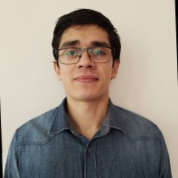
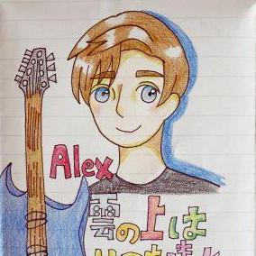

People
Academic Staff
Collaborators
We share research interest with:
- Juan Bekios Calfa, Universidad Católica del Norte, Chile.
- Antonio Valdés Morales, Universidad Complutense, Spain.
PhD Students
Sofía Fernández León (IMDEA Materiales-UPM)
"Digital Twins for Smart Manufacturing of Structural composites", (started 2023)

Ricardo Pizarro Carreño (UAH-UPM)
"Human body analysis for autonomous driving", (started 2023)
